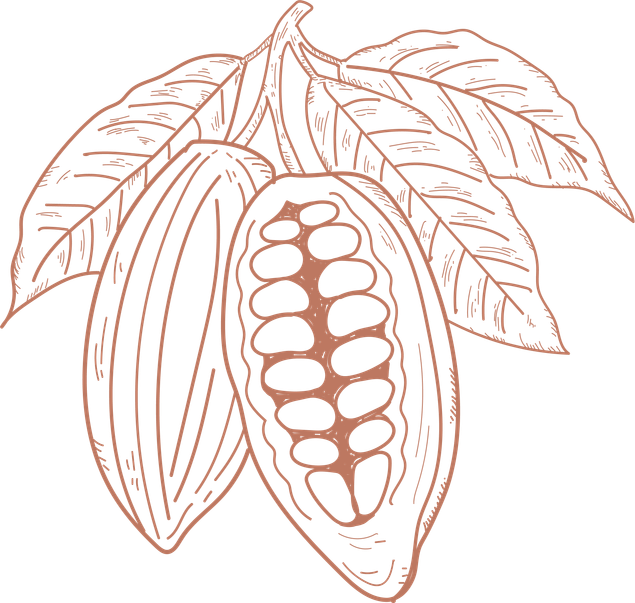
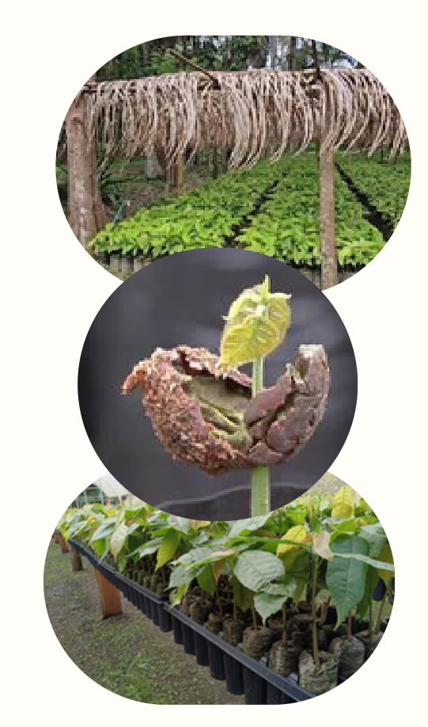
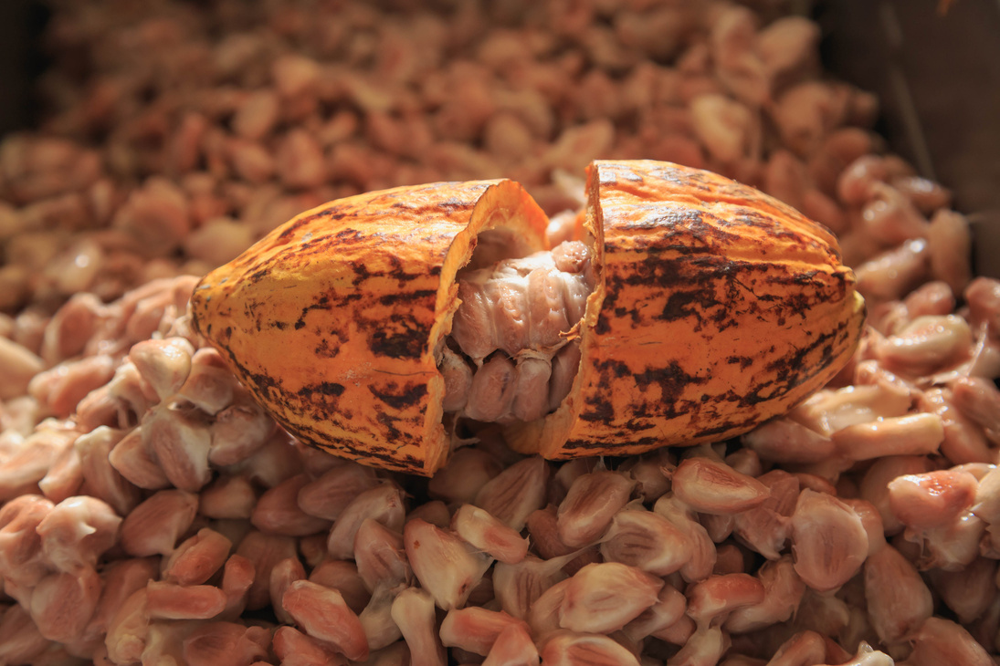
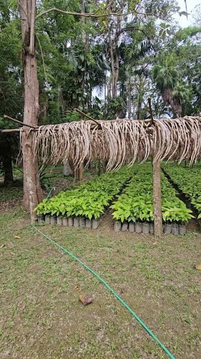
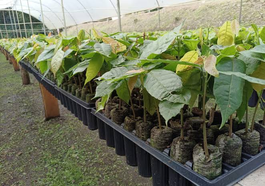

Monitoreo y control automatizado de la germinación de semillas mediante tecnología IoT. Del control manual a la agricultura inteligente.

Automatiza el monitoreo y control ambiental del invernadero, para que la germinación de las plantas ya no dependa de que alguien esté mirando a cada hora.
Sensores DHT22 y LDR calibrados para registrar continuamente las variables microclimáticas vitales para el desarrollo de la planta.
Sensor de humedad de suelo capacitivo que activa la electrobomba de riego solo cuando el sustrato desciende del umbral óptimo.
Extractor dinámico de calor que se acciona automáticamente al superar los 30°C para disipar el estrés térmico en el germinador.
Transmisión de telemetría por MQTT con avisos preventivos inmediatos si las condiciones se desvían de los rangos biológicos recomendados.

Los agricultores de Tingo María controlan la temperatura y la humedad de forma manual y empírica, revisando el invernadero varias veces al día. De noche o en días de lluvia, las condiciones cambian sin que nadie se dé cuenta a tiempo y eso se traduce en menos plántulas listas para el trasplante.
Falta de supervisión nocturna: Las heladas, golpes de calor o lluvias repentinas ocurren sin monitoreo.
Riego desequilibrado: El exceso pudre la semilla y la escasez detiene el desarrollo radicular.
Pérdida económica: Menor tasa de germinación significa mayor costo por plántula producida.
germinación con semilla fresca y manejo adecuado

rango óptimo de temperatura durante la germinación
humedad relativa requerida en el germinador

para la emergencia de brotes en condiciones óptimas

Siete resultados concretos que transforman la forma en que se gestiona la germinación de las plantas.
Monitoreo continuo 24/7 sin descanso, registrando variables climáticas en intervalos de milisegundos.
Dosificación precisa del agua según la conductividad del sustrato, evitando el desperdicio del recurso.
Acceso desde cualquier smartphone, tablet o computadora a través de un panel web responsivo y amigable.
Maximizando el vigor y la uniformidad de las semillas al mantenerlas en su zona de confort biológico.
Topología MQTT modular que permite sumar nuevos nodos y sensores a una misma estación central sin fricción.
Liberación de horas de trabajo repetitivo para que el productor pueda enfocarse en labores estratégicas del vivero.
Suelo seco → activa la bomba · Temp. >30°C → activa el ventilador. La lógica corre directamente en el microcontrolador ESP32: el invernadero responde y protege el cultivo aun sin conexión a la red.
Metodología: fases centradas en el agricultor para resolver el problema desde la empatía hasta la validación física.
Entrevistas, encuestas y observación directa en invernaderos y viveros de Tingo María.
Dificultad para controlar humedad, temperatura y riego de forma constante y nocturna.
Comparamos 3 alternativas; elegimos la de mayor impacto: monitoreo + alertas + riego automático.
Construcción física a escala (45 × 56 × 71 cm) y desarrollo de la plataforma web en tiempo real.
Pruebas funcionales en entorno controlado con 100% de éxito en comunicación y actuación.
Integración transparente de hardware embebido, servidor de telemetría e interfaz de usuario.
Hardware, software y comunicación validados de extremo a extremo en un prototipo a escala reducida.
Conexión WiFi del ESP32 establecida y reconectada correctamente.
Datos recibidos por MQTT sin pérdidas apreciables en las pruebas.
Bomba y ventilador respondieron con precisión a los umbrales definidos.
Plataforma web mostró todas las variables en tiempo real con mínima latencia.
Modo manual controló los actuadores de forma remota desde la web.
Sistema estable durante todo el periodo experimental de pruebas.
Construido a escala reducida (45 × 56 × 71 cm) siguiendo cinco pasos sistemáticos para garantizar la replicabilidad del proyecto:
Universidad Nacional Agraria de la Selva · Facultad de Ingeniería en Informática y Sistemas
Curso: Internet de las cosas · Semestre 2026